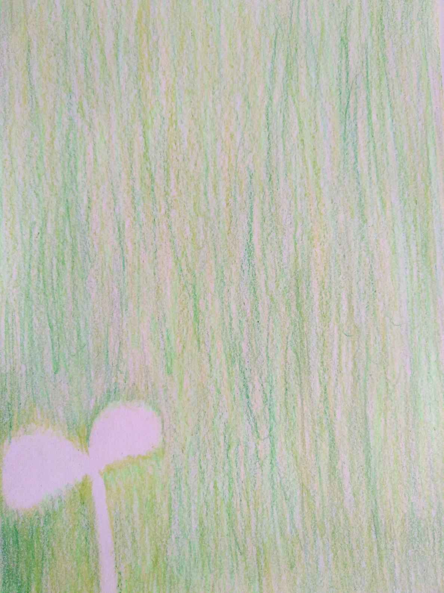
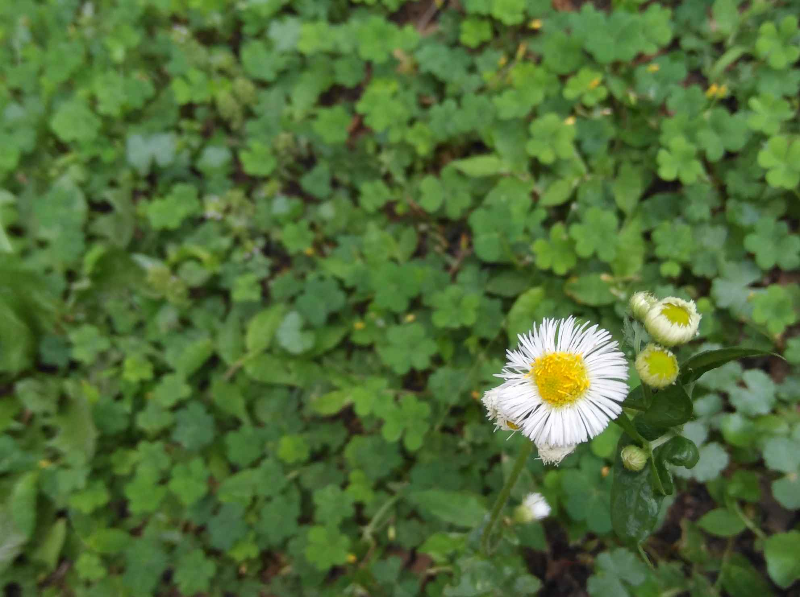
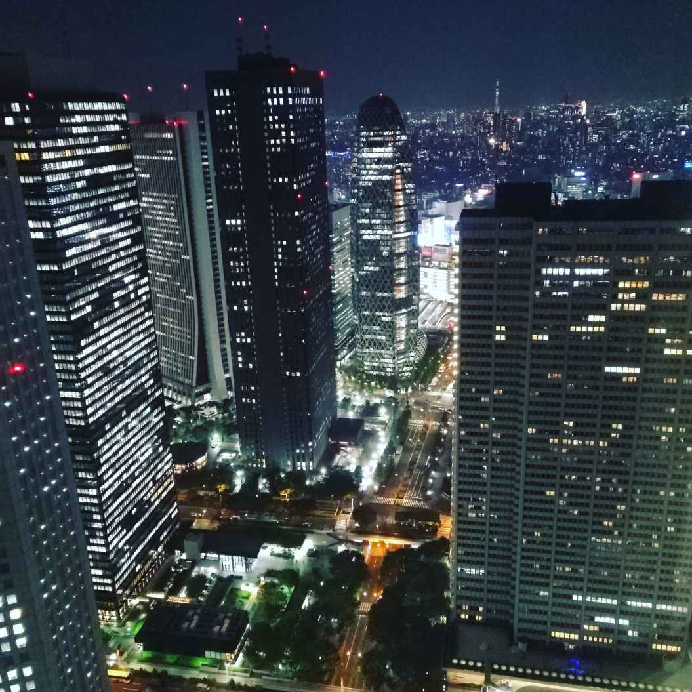
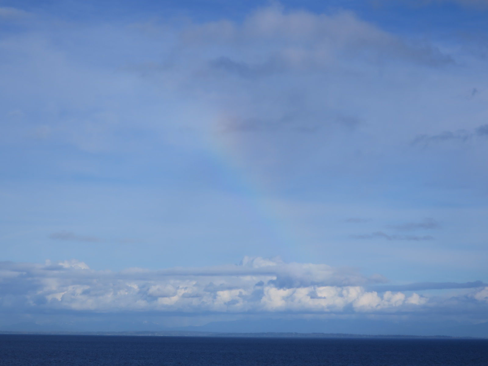

| R ～今日は赤い薔薇を～ | |
| 田中利佳 & rIKata | |
| (2019) | |
R² ～今日は赤い薔薇を～
雲ひとつない空は眩しいけれど
表情のある空のほうが親近感がわく。
曇りの日があったっていい。
雲に覆われた涙の日があってもいい。
その方が自然で
リアル。

恵みの雨を受けて、緑は芽を出す。そして。
空に向かってぐんぐん伸びていく。
成長するために必要なものはたくさんある。
太陽、水、栄養、添え木、他の生物のサポート......
あなたの差し出した手に救われた人がきっといる。必ずいます。
行動は自分から。挨拶は自分から。
意図していなくても、ただそこにいるだけで。存在していることが、そう。
奇跡。
誰もが誰かの大切な人。

なぜだろう。花の絵って、中心を黄色で描くことが多いかも。
あなたの人生の主役はあなた自身。私の人生の主役は私。
誰かの人生にも友情出演しているけれど。
脇役だったり、準主役級だったり、エキストラだったり。
花びらだけでは存在できない。
あなたの個性が花びらだとしたら、しっかりと軸を持っていたい。
あなた自身が中心の黄色なら
周りの白い花びらはあなたを慕う周囲の人。
自分を大切にしてあげて。
海に沈む丸いオレンジみたいな夕日。
地球は丸い。
それを知っている私たちは幸せだ。
何か新しいことを始めるには勇気がいる。
周囲と違う意見を言うには勇気がいる。
だから、先頭を走る人の功績は大きい。
物事を動かせる人にはパワーがある。
ただ。可能性はあなたにも、私にもある。
お日様は地球の反対側を照らしに行く。
順番に。順番に。
今日も一日おつかれさま。
帰るところがあるから人は旅をする。
行き先が定まらないのは放浪。
人生は旅だというけれど。
さぁ。今日のあなたはどこに帰る？
帰り道。
ちょっと寄り道をしてみよう。

「今日は薔薇の花を」
柄じゃない。
そんな人こそ。
なんでもない日のサプライズ。
これって究極の愛じゃないかなぁ。
贈りたい人がいる。
贈ってくれる人がいる。
だからそれって。
人生薔薇色。
薔薇のラッピング。紫色を基調にしてみた。
紫色は高貴な色。
昔は位の高い人しか身に着けられなかった。
でも、今は違う。
自由なんだ。
自分らしく選ぶことができる。
"あの人"の好きな色を選ぶことができる。
さぁ。そろそろ目的地が見えてきたみたい。

夜は闇じゃない。深みのあるブルー。
インディゴブルー。
藍色。誰もが気軽に身につけられた色。身近な色。
日本の首都である東京は「眠らない街」と言われるけれど、
その明るく輝く街の灯りの下には誰かがいるってこと。
真っ暗な中じゃ生きていけないから。
今日もありがとうございます。
誰もが世界をつくっている、その中の一人。
今夜も素敵な夢が見られますよう。
あとがき
この本は私にとってのデビュー作です。
今、私は人生の転換期にいます。
同じように人生のターニングポイントにいる方も多いかもしれません。
私はずっと旅行が好きで、国内外問わず色々と出かけました。
国が違えば言葉や文化も違います。
でも、それは同じ日本国内でも同じだという印象を受けました。
それぞれの土地に特産品があり、名所と呼ばれる観光地があるように、
それぞれの土地で人々は精一杯生活をしている。
では、私にできることは何だろう。
私のやりたいことは何だろう。
――そんな自問自答が続きました。
私たちが暮らしている地球は美しい星だな。
ひとつ、たどり着いた気付きです。
カラフルなんですよね。
地球には75憶人が生活していますが、
それぞれが異なる唯一の存在。
自分の人生は自分だけのもの。
でも一人で生きているわけでは決してありません。
人生という旅の中でたくさんの人に出会い、
たくさんの経験をしてきたからこそ、恩返しがしたい――
まだまだ私自身の人生という旅は続きます。
最後まで読んでいただいてありがとうございました。
近いうちにまた、新たな報告ができますよう。
令和元年 ６月 rIKata
明けない夜は決してありません。
あなたのお気に入りの景色は何色ですか？
